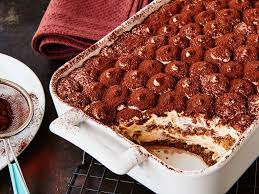

Tiramisu de la Mamma

Hola a tots i a totes. Avui us portem una recepta inedita del tiramisu de la Mamma (si, de la meva mama). A continuacio els ingredients i passos per poder tal delicatessen:
Ingredients
- Barquitos
- Cafe
- Cacao en pols
- Ous
- Sucre
Passos
- Separar el rovell de la clara i muntar la clara fins a punt de neu afeginthi sucre.
- Batre els rovells amb el sucre. Afegir un xorret de cafe.
- Barrejar delicadament les clares muntades i la crema
- Posar una capa de la mescla. Remollar els barquitos i posarlos com deu mana